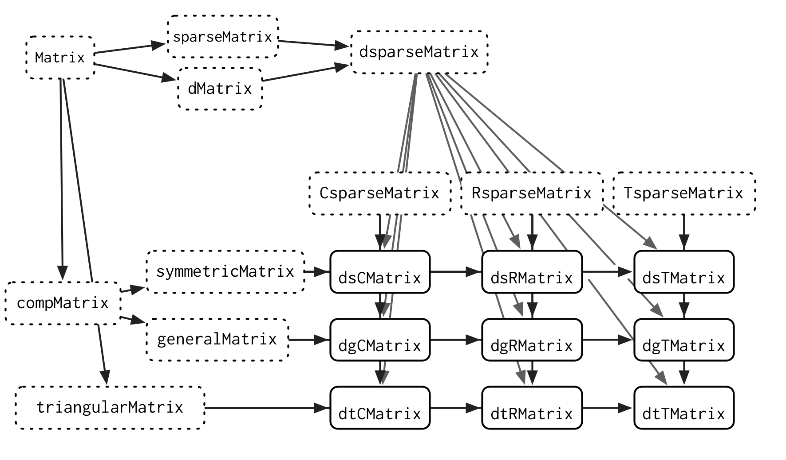

new_stack <- function(items = list()) {
structure(list(items = items), class = "stack")
}
push <- function(x, y) {
x$items <- c(x$items, list(y))
x
}16 Trade-offs
Introduction
前面我们对R中的三种OOP系统进行了系统介绍，了解了它们的基本使用方法，现在我们将三种系统进行对比，进一步了解它们各自的优劣势。这对我们在处理问题选择何种系统时会有所帮助。
总的来说，作者推荐S3系统，因为它足够简单，并且广泛应用在base R和CRAN中；虽然它不是完善的，但是有一些处理方法可以避免。并不推荐总是使用R6系统。
Outline
- 16.2节：S3与S4系统进行对比。简而言之，S4更加正式，往往需要更多的前期规划。这使得它更适合由团队而非个人开发的大型项目。
- 16.3节：S3与R6系统进行对比。这一部分相当长，因为这两个系统在根本上是不同的，你需要考虑一些权衡。
S4 versus S3
一旦你熟悉使用S3系统，S4系统也就水到渠成，因为底层思想是一致的，只是S4系统更加正式严格，这使得S4系统更适合大型项目。因为S4系统提供了许多工具，如构造函数，验证函数等，我们无需为此过多耗神，而是将更多精力花在“绘制蓝图”上。
Bioconductor是一个使用S4系统取得良好效果的重要项目，其中很多包使用的数据结果，如SummarizedExperiment、IRanges、DNAStringSet，都是使用S4系统开发的。
通过仔细地使用“methods”，在面对有关联地复杂系统时，我们可以最小程度地减少代码复用（继承）。例如“Matrix”包，它旨在高效地存储和计算多种不同类型的稀疏和密集矩阵。截至1.7.2版本，它定义了108个类、23个泛型函数和1780个方法。下面是它类图的一个小子集。

矩阵计算这个领域非常适合使用S4, 因为稀疏矩阵的特定组合通常有计算捷径。S4 使得提供一个适用于所有输入的通用方法变得容易，然后在输入允许更高效实现的情况下提供更专业的方法。这需要仔细规划，以避免方法调度的模糊性，但这种规划会带来更高的性能。
使用S4的最大挑战是日益增加的复杂性和缺乏单一文档来源的结合。S4是一个复杂的系统，在实践中有效使用可能具有挑战性。如果S4文档没有分散在R文档、书籍和网站中，这就不会是一个大问题。S4需要一本书的长度，但这本书 (目前) 还不存在。(S3 的文档并不更好，但缺乏这本书的痛苦较小，因为S3要简单得多。)
R6 versus S3
R6是一个与S3和S4截然不同的面向对象系统，因为它建立在封装对象之上，而不是泛型函数。此外，R6对象具有引用语义，这意味着它们可以在原位修改。这两个重大差异带来了许多不明显的后果，我们将在这里探讨。
- 泛型函数是一个常规函数，因此它存在于全局命名空间中。R6方法属于对象，因此它存在于局部命名空间中。这影响了我们思考命名的方式。
- R6的引用语义允许方法同时返回值和修改对象。这解决了一个被称为 “线程状态” 的棘手问题。
- R6使用
$调用方法，$是一个“infix”运算符。如果你正确地设置了你的方法，你可以使用方法调用链作为管道的替代方案。
这些是泛函性OOP和封装OOP之间的一般权衡，因此它们也可以作为R与Python中系统设计的讨论。
Namespacing
S3和R6之间一个不明显的区别是方法所在的空间：
- 泛型函数是全局的：所有包共享相同的命名空间。
- 封装方法是本地的：方法绑定到单个对象。
全局命名空间的优势在于，多个包可以使用相同的“动词”来处理不同类型的对象。泛型函数提供了统一的API, 这使得对新对象执行典型操作变得更容易，因为存在强大的命名约定。这在数据分析中效果很好，因为你经常想对不同类型的对象做相同的事情。特别是，这是R的建模系统如此有用的一个原因：无论模型在哪里实现，你总是可以使用相同的工具集 (summary ()、predict () 等) 来处理它。
全局命名空间的缺点是它迫使你对命名进行更深入的思考。你需要避免在不同的包中使用多个名称相同的泛型，因为这需要用户频繁地输入::。这可能很困难，因为函数名称通常是英语动词，而动词通常具有多重含义。以 plot()为例：
plot(data) # plot some data
plot(bank_heist) # plot a crime
plot(land) # create a new plot of land
plot(movie) # extract plot of a movie通常，你应该避免使用与原始泛型函数名同义的方法，而是应该为这些方法定义一个新的泛型。
R6 方法不会出现这个问题，因为它们的作用域是对象。以下代码没有问题，因为这并不意味着两个不同R6对象的plot方法具有相同的含义：
data$plot()
bank_heist$plot()
land$plot()
movie$plot()这些考虑也适用于泛型函数的参数。S3泛型必须具有相同的核心参数，这意味着它们通常具有非特定的名称，如x或.data。S3泛型通常需要...向方法传递额外的参数，但这有一个缺点，即拼写错误的参数名称不会产生错误。相比之下，R6 方法可以有更广泛的变化，并使用更具体和更具启发性的参数名称。
本地命名空间的一个次要优势是创建R6方法非常“廉价”。大多数封装的面向对象语言都鼓励你创建许多小方法，每个方法都有一个引人注目的名称。创建一个新的 S3 方法成本更高，因为你可能还需要创建一个泛型，并考虑上述命名问题。这意味着创建许多小方法的建议不适用于 S3。将代码分解成易于理解的小块仍然是一个好主意，但它们通常应该只是普通函数，而不是方法。
Threading state
使用S3编程的一个挑战是，当你想要同时返回值和修改对象时，会违反我们指导原则，即函数被调用时或返回值或执行副作用，但在少数情况下同时执行又是必要的。
例如，假设你想创建一个“栈”对象，它有两个主要方法：
push()：在栈顶添加一个新对象。pop()：返回栈定处的值，然后从栈中删除它。
栈对象的构造函数和push()方法的实现很简单。栈包含一个项目列表；将一个对象推送到栈只是简单地添加到这个列表中。
实现pop()方法更具挑战性，因为它必须同时返回一个值 (栈顶部的对象) 和一个副作用 (从顶部移除该对象)。由于无法在S3中修改输入对象，我们需要返回两样东西：值和更新后的对象。
pop <- function(x) {
n <- length(x$items)
item <- x$items[[n]]
x$items <- x$items[-n]
list(item = item, x = x)
}这会导致使用方式相当尴尬：
s <- new_stack()
s <- push(s, 10)
s <- push(s, 20)
out <- pop(s)
out$item
#> [1] 20
s <- out$x这个问题被称为线程化状态（threading state）或累加器编程（accumulator programming），因为无论调用pop()多深，你都必须将修改后的栈对象一直线程化到它所在的位置。
其他FP语言应对这一挑战的一种方式是提供多重赋值（multiple assign）或解构绑定运算符，允许你在一个步骤中赋值多个值。“zeallot”包为R提供了%<-%的多重赋值功能。这使代码更加优雅，但并没有解决关键问题：
library(zeallot)
c(value, s) %<-% pop(s)
value
#> [1] 10堆栈的R6实现更简单，因为$pop()可以就地修改对象，并且只返回最上面的值：
Stack <- R6::R6Class("Stack", list(
items = list(),
push = function(x) {
self$items <- c(self$items, x)
invisible(self)
},
pop = function() {
item <- self$items[[self$length()]]
self$items <- self$items[-self$length()]
item
},
length = function() {
length(self$items)
}
))这种方式的代码更加自然：
s <- Stack$new()
s$push(10)
s$push(20)
s$pop()
#> [1] 20作者在“ggplot2”包种的scales中遇到了一个真实的线程状态案例。scales很复杂，因为它们需要跨每个分面和每个层组合数据。作者最初使用S3类，但这需要在许多函数之间传递scales数据。切换到R6后，代码变得简单了许多。然而，它也带来了一些问题，因为作者在修改图表时忘记调用$clone()。这使得独立的图表可以共享相同的比例数据，从而产生了一个难以追踪的微妙bug。
Method chaining
管道符%>%很有用，因为它提供了一个“infix”运算符，使得从左到右组合函数变得容易。有趣的是，管道对R6对象来说并不那么重要，因为它们已经使用了一个“infix”运算符：$。这允许用户在单个表达式中链接多个方法调用，这种技术被称为方法链（method chaining）。
s <- Stack$new()
s$
push(10)$
push(20)$
pop()
#> [1] 20这种技术通常用于其他编程语言，如Python和JavaScript, 并且是通过一个约定实现的：任何主要因其副作用 (通常是修改对象) 而调用的R6方法都应该返回invisible(self)。
方法链的主要优点是可以获得有用的自动补全；主要缺点是只有类的创建者才能添加新的方法 (而且没有办法使用多分派)。